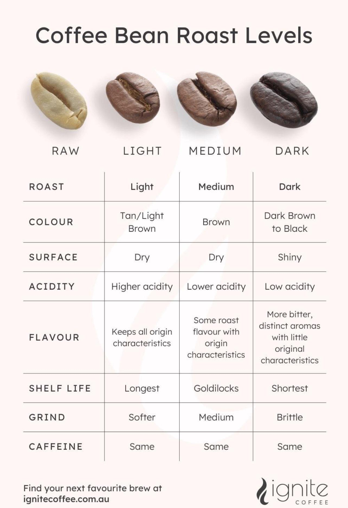

A kávéfogyasztás egyre nő globálisan, a specialty, azaz újhullámos kávék – amik az érzékszervekre
komplexen ható élményét adják a kávéfogyasztásnak – világszintű elterjedése pedig friss horizontokat nyitott
a kávékedvelők számára itthon is. A hazai rajongók örömére a napokban egy újabb kávékomplexum nyitotta meg
kapuit. We know coffee, azaz, ismerjük a kávét – ez olvasható a budaörsi Röast Coffee kávépörkölő és
oktatóstúdió ablakán, mi pedig hihetünk nekik. A Röast csapatában ugyanis mindenki ismeri és szenvedélyesen
szereti a kávét – nem mellesleg nemzetközi szinten is elismert név a szakmában. Közülük Nagy-Bertók
Anitával, a Röast szakmai vezetőjével, érzékszervi és vizuális világbíróval beszélgettünk a specialty
kávéban rejlő lehetőségekről, a jelenleg uralkodó kávétrendekről és arról, mire képes szívünk csücske: a
kotyogós. Filákovity Radojka a Röast Coffee megnyitóján járt.
Letisztult, barátságos környezet, és a minden mással összehasonlíthatatlan illat – ez fogad, amikor belépek
a Roastar új kávékomplexumába, a Röast Coffee-ba. Hogy egy klisével éljek: jó időben, jó ütemben nyitottak,
hiszen 2024-re óriási távlatok nyíltak meg a kávézás tekintetében számunkra itt, Magyarországon is. Egyre
nagyobb a kereslet a minőségi kávéra, kávépörkölőkből is egyre több jelenik meg a piacon különböző pörkölési
stílusokkal, különböző portfóliókkal.
Ehhez a különlegességnek számító, hazánkban egyetlen Stronghold S9X pörkölőgép adja az infrastruktúrát, amit a Röast megnyitóján meg is lehetett tekinteni. Ez az elektromos pörkölő hatalmas mozgásteret ad, mivel háromféle hőleadásra is képes, amivel a különböző kávék receptjeinek kialakításában segít. A Röast Coffee csapatának új üzemében a saját specialty és non-specialty kávékínálat, a white label termékfejlesztés és a már említett bérpörkölés mellett oktatást is kínálnak, ami tovább segíthet felfedezni az úgynevezett újhullámos kávékban rejlő izgalmakat.
Amikor egy pohár E.T. (becses nevén espresso tonic) mellett megemlítem Anitának, hogy napjainkban már úgy
beszélünk a kávéról, mint a borokról – savasságot, teltséget, gyümölcsös jegyeket emlegetünk – hangsúlyozza:
sokan nem tudnak róla, de a kávé is voltaképpen egy csonthéjas gyümölcs, csak annak nem a húsát, hanem a
magját fogyasztjuk.
„Az ember elsősorban már pörkölve, tehát barna színben találkozik vele, sokan így nem is tudják, hogy a
nyers, úgynevezett zöld kávé hogy néz ki. Egyébként ez is teljesen változó lehet attól függően, milyen
variánsról beszélünk, és az honnan jött, mi a genetikája. Maga a kávé nagyon komplex dolog, annak ellenére,
hogy már több mint húsz éve foglalkozom vele, mindig tud újat mutatni számomra is” – mondja Anita.
„A legizgalmasabb kérdés pedig, hogy mi az a maximum, amit először a pörkölő, majd a barista ki tud hozni a
kávéból – hogyan tudnak prezentálni minden egyes állomást, ízt és savat a csészében, ami a fajta sajátja,
illetve az adott területre jellemző, ahol a kávé termett. Aztán a fogyasztón a sor, aki majd eldöntheti,
melyik irány áll hozzá a legközelebb. Végül az egész természetesen szubjektív mérce alapján mérettetik meg:
szeretni fogom, vagy sem.”
Anita kiemeli: az első találkozás a specialty kávéval nem mindig pozitív, hiszen nem azt az ízt hozza, amit
az ember a kávéval kapcsolatban megszokott. Ha az alapízekről beszélünk, megjelenik például benne a
savasság, amit nem mindenki kedvel először.Ł
Amikor arról kérdezem, mit ajánlana azoknak, akik csak most ismerkednek ezzel a világgal, azt mondja: a
világos pörkölés szinte már minden kávézóban elérhető, onnan elindulhatunk. A single origin pedig, ami egy
adott ország, adott termőterületéről, és abból is egy adott farmról származó kávét jelzi, további támpontot
adhat.
„A kávéval sokáig nem foglalkoztak a gasztronómiában. A ’70-es évek elején jelent meg először a New
York
Café & Tea Journal-ban, az a szó, hogy specialty, ami a kávé egy egészen új, addig nem ismert fajtáját
takarta.
– meséli Anita, aki szerint a világversenyek mellett az is nagyban segítette a specialty kávék elterjedését
világszerte, hogy az idők során a termesztők is egyre nyitottabbá váltak.
„Ezek a farmerek generációról generációra örökölték meg a területeket, a kávétermesztés és -feldolgozás
titkát, amit természetes, hogy őriztek. Ma már viszont nagyon nyitottak arra, hogy fogadják azokat az
európai, amerikai, esetleg ausztrál baristákat, akik az ő kávéjukkal dolgoznak, hogy jobban
megismertessék
velük a termesztés minden szakaszát, és ez által a kávéjukban rejlő lehetőségeket.”

A kávé jelene mellett megkerülhetetlen volt, hogy a jövőjéről is szót ejtsünk Anitával, aki kétségbeesett kérdésemre rögtön megnyugtató választ adott: a riogatásokkal ellentétben van elég kávé. Bár igaz, hogy a globális felmelegedés – ahogy minden másra – a kávétermesztésre is hat. Ez ellen többek közt különböző stratégiákkal igyekeznek védekezni a termesztők. „Az arabica faj, ami a globális termesztés 70 százalékát teszi ki, nagyon érzékeny a robustához képest, ami magasabb koffeintartalmának köszönhetően ellenállóbb a betegségekkel szemben. Nézzük például Brazíliát, a világ legnagyobb termesztő országát – 30–35 százalékát adja a globális termesztésnek, ami 60–75 milló zsák kávét jelent évente (60 kilós zsákokról beszélünk) –, ahol öt fő termesztőterület van, magaslatok viszont alig. Míg ők 1200–1400 méteren termesztenek maximum, addig Kolumbiában például 2000 méteren, ami teljesen más minőséget ad a kávénak." – mondja.